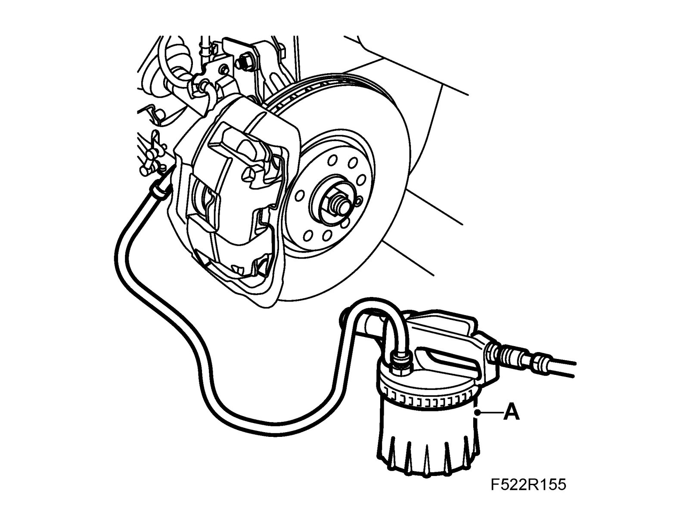
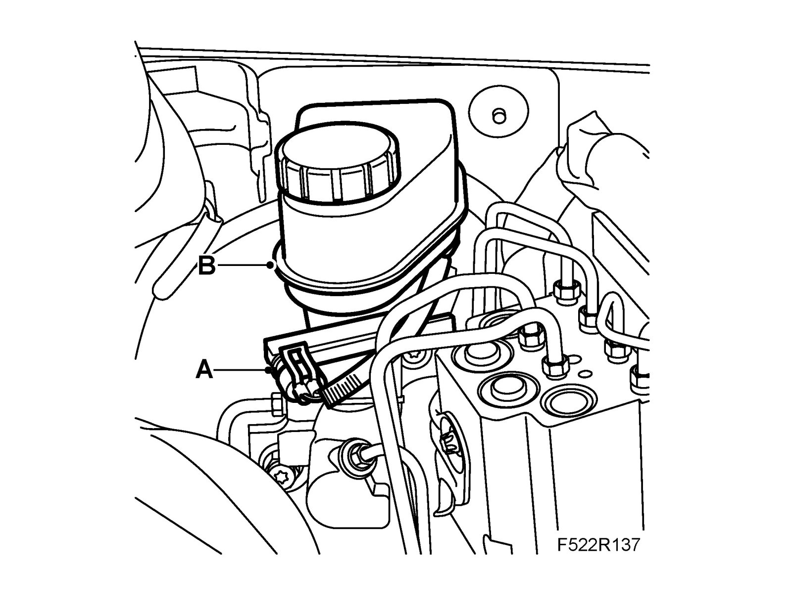

Brake Fluid Reservoir, LHD
Brake fluid reservoir, LHDTo remove
Important
Scrupulous cleanliness must always be observed during all work with hydraulic components.
1. Fit the wing cover onto the left-hand front wing.
2. Lay a rag under the brake fluid reservoir.
3. Remove the brake fluid reservoir cap.
4. Undo the coolant reservoir from the bulkhead and lift it up.
5. Drain the brake fluid reservoir's brake chamber:
^ Raise the car.
^ Connect the brake bleeder (A) to the air nipple on the brake caliper for the left-hand front wheel.

^ Open the nipple and draw out brake fluid until one of the reservoir chambers is empty.
^ Close the nipple and disconnect the brake bleeder.
Tightening torque for air nipple: 16 Nm (12 lbf ft)
^ Connect the brake bleeder to the air nipple on the front right wheel.
^ Open the nipple and draw out brake fluid until the other reservoir chamber is empty.
^ Close the nipple and disconnect the brake bleeder.
Tightening torque for air nipple: 16 Nm (12 lbf ft)
^ Lower the car.
6. Manual gearbox: Drain the brake fluid reservoir's clutch chamber:
^ Connect the brake bleeder to the clutch bleed nipple.
^ Open the nipple and suction out brake fluid until the level in the reservoir falls below the connection.
^ Close the nipple and disconnect the brake bleeder.
^ Remove the hose for the clutch from the brake fluid reservoir.
7. Unplug the connector (A) for the brake fluid reservoir's level sensor.

8. Remove the locking bolt from the brake fluid reservoir (B) and detach the reservoir from the cylinder.
9. Remove the level sensor from the brake fluid reservoir.
To fit
Important
The EHPS system must not be run dry. Do not reuse drained fluid. Fill the hydraulic system with special fluid.
1. Fit the level sensor to the brake fluid reservoir.
2. Fit the brake fluid reservoir (B) onto the master cylinder and screw in the locking screw.

3. Plug in the connector (A) for the brake fluid reservoir's level sensor.
4. Manual gearbox: Connect the hose from the clutch master cylinder to the brake fluid reservoir.
5. Fit the coolant reservoir.
6. Bleed the brake system.
7. Manual gearbox: Bleed the clutch system.
8. Remove the rag from under the brake fluid reservoir.
9. Remove the wing cover from the left-hand front wing.